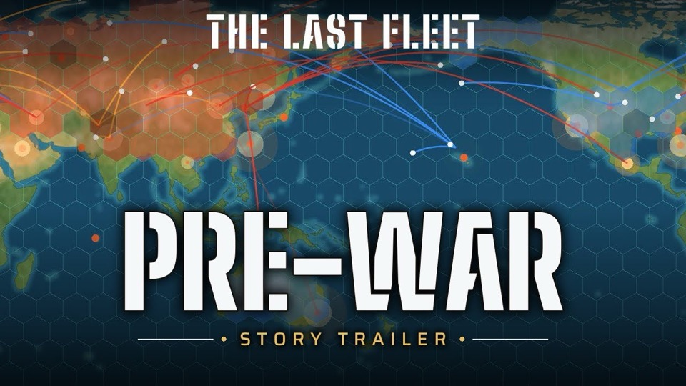
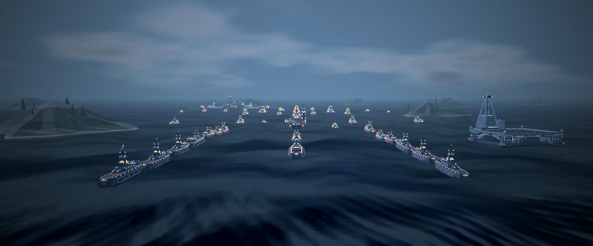

Story trailer: how the war happened, told by ARI.
The war is over. Nobody won.
A ten-year war, a starving world, and then a single hour when every nation launched at once. The survivors call it the Exchange. The land is burned, irradiated or going under, and the seas rise with every passing month.
You are a newly promoted Captain with a carrier one week out of the yard, ARTEMIS, and her AI, ARI. You have a handful of escorts that can never be replaced. Keep them afloat, build a fleet from what the war left behind, and decide what the world after looks like.

The pre-war ceiling
Your carrier and her escorts are the last of their kind. Everything you build after the war is improvised from salvage on captured oil rigs: welded, patched, and never as good. Lose a pre-war ship and she is gone for good.
"What we can't make up in quality... we make up in quantity."ARI